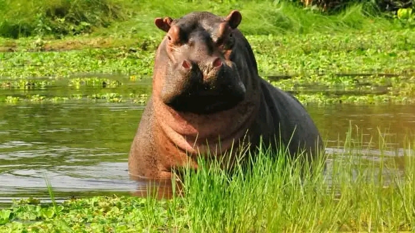
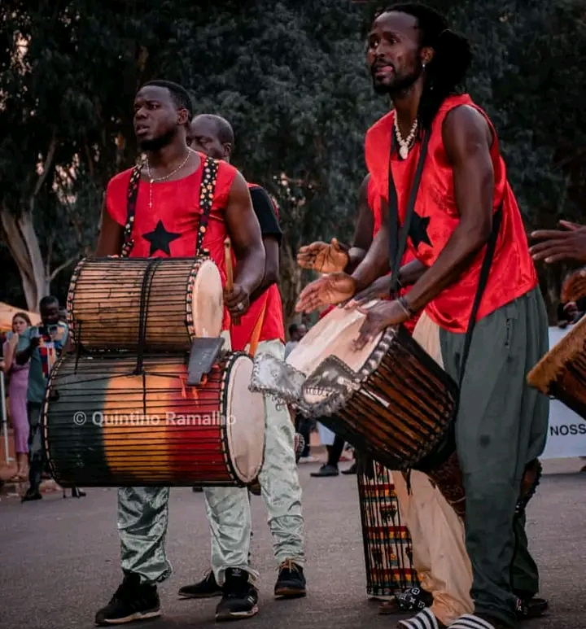
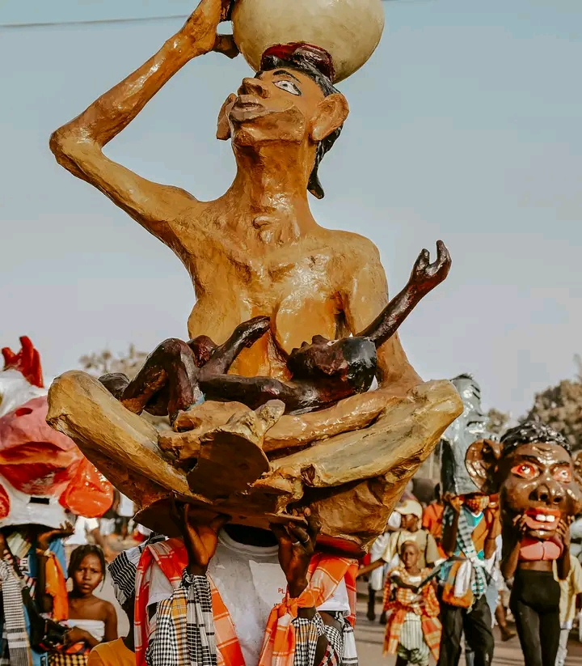

Turismo da Guiné-Bissau
A Guiné-Bissau é um país localizado na África Ocidental, conhecido pela sua riqueza natural, diversidade cultural e hospitalidade do seu povo. O turismo na Guiné-Bissau oferece uma experiência única, combinando praias paradisíacas, ilhas preservadas, cultura tradicional e história.



Um dos maiores tesouros do país é o Arquipélago dos Bijagós, considerado Reserva da Biosfera pela UNESCO. As suas ilhas apresentam paisagens naturais quase intocadas, com grande biodiversidade marinha e terrestre.


Além da natureza, o país também se destaca pelas suas tradições, música, danças e festividades culturais que mostram a identidade do povo guineense. Visitar a Guiné-Bissau é descobrir um destino autêntico, tranquilo e cheio de beleza.